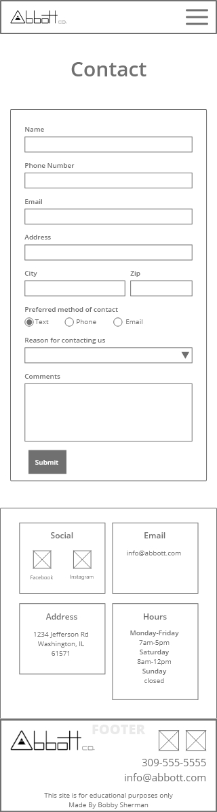

Abbott Construction | Responsive Website
This responsive site is for an imaginary builder called Abbott Co. It uses a minimalist approach to avoid distracting home owners and potential clients from finding the information they need. The goal of the site is to encourage the customer to contact this business for discussing a project. The features include a layout built with CSS Grid, global styling, media queries, CSS reset, CSS variables, and a responsive navigation.
Wireframes
Tablet
Mobile
Mockups
Desktop
Tablet

Mobile